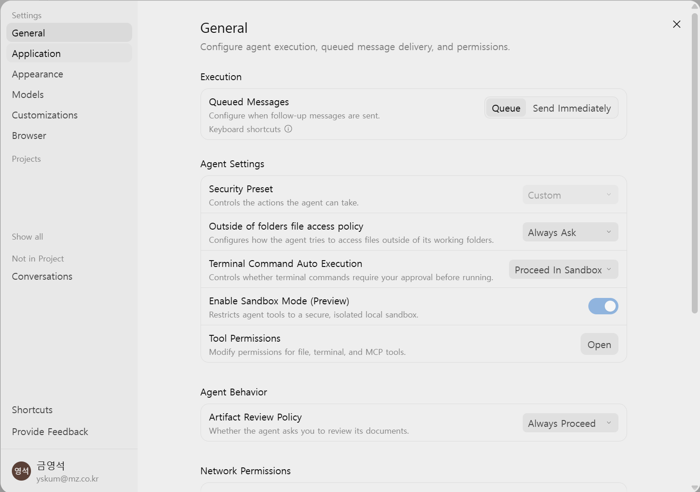
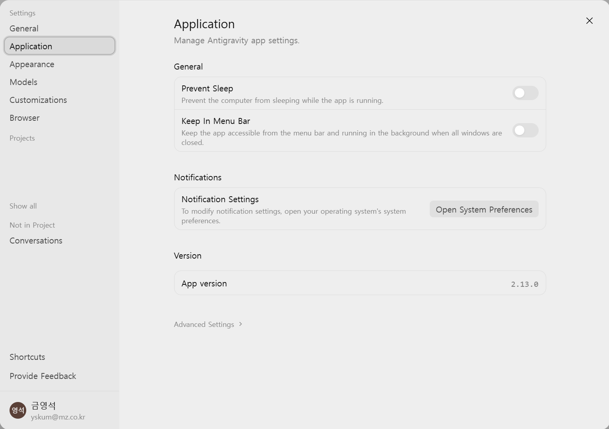
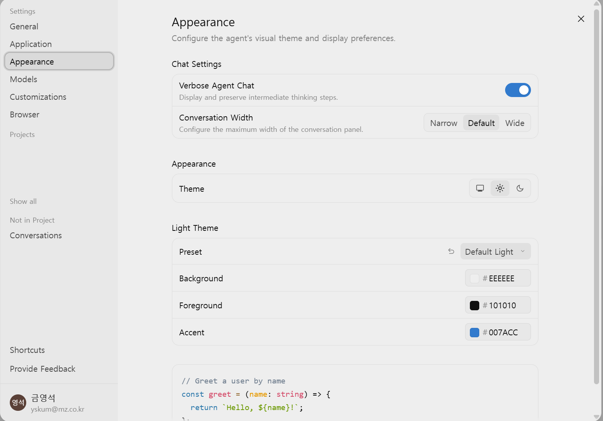
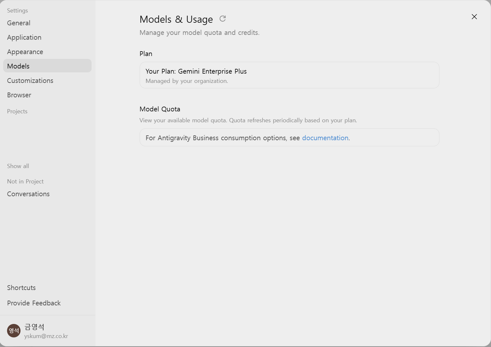
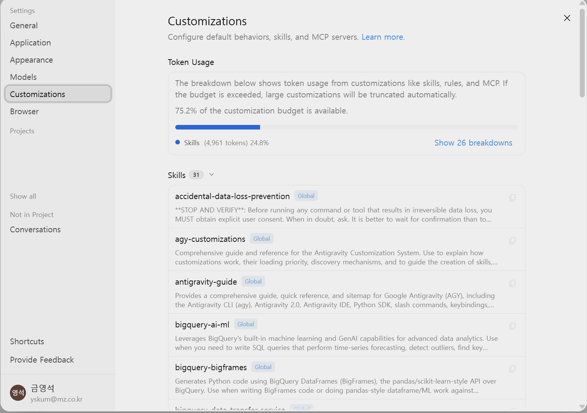
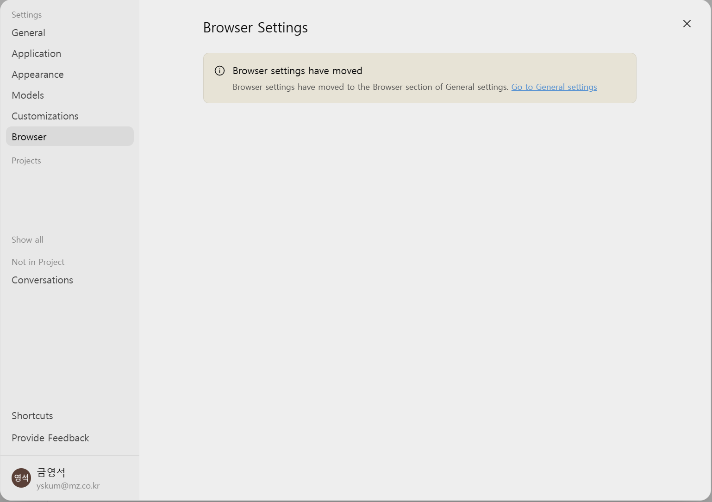

Antigravity 설정 방법
좌측 하단 톱니바퀴(Settings)를 누르면 설정 화면이 열립니다.
왼쪽 메뉴 순서대로 각 화면에서 무엇을 설정하는지 살펴봅니다.
1. General — 에이전트 실행·권한
에이전트가 어디까지 스스로 실행할 수 있는지 정하는 가장 중요한 화면입니다.

Execution — 메시지 전달
| 항목 | 설명 |
|---|---|
| Queued Messages | 에이전트가 작업 중일 때 추가로 입력한 메시지를 언제 전달할지 정합니다.
Queue는 지금 하던 작업이 끝난 뒤에 순서대로 전달하고,
Send Immediately는 작업 도중이라도 즉시 끼어들어 전달합니다.
작업 흐름이 끊기지 않게 하려면 Queue, 급하게 방향을 바꿔야 할 일이 많으면 Send Immediately가 편합니다.
키보드 단축키로도 전환할 수 있습니다. |
Agent Settings — 에이전트 권한
| 항목 | 설명 |
|---|---|
| Security Preset | 에이전트가 할 수 있는 행동 범위를 묶음으로 정하는 프리셋입니다.
현재 사용하는 사내 라이선스에서는 Custom으로 고정되어 있으며,
아래 개별 항목(파일 접근·명령 실행 등)을 통해 세부 정책을 조정합니다. |
| Outside of folders file access policy | 에이전트가 작업 폴더 바깥의 파일을 읽거나 쓰려고 할 때의 동작입니다.
작업 폴더 안의 파일은 이 정책과 무관하게 접근할 수 있습니다. 선택지는 세 가지입니다.
· Always Ask — 바깥 파일에 접근할 때마다 사용자에게 승인을 요청합니다. 기본값이자 권장값입니다.
· Allow — 승인 없이 바깥 파일에 자유롭게 접근합니다. 편리하지만 의도하지 않은 파일을 읽거나 수정할 수 있어 주의가 필요합니다.
· Deny — 바깥 파일 접근을 아예 차단합니다. 에이전트는 작업 폴더 안에서만 동작합니다. |
| Terminal Command Auto Execution | 에이전트가 터미널 명령을 실행하기 전에 승인을 받을지 정합니다. 선택지는 세 가지입니다.
· Require Review — 모든 터미널 명령을 실행 전에 사용자가 검토·승인합니다. 가장 안전하지만 승인이 잦아집니다.
· Proceed in Sandbox — 격리된 샌드박스 안에서는 승인 없이 자동 실행하고, 샌드박스 밖으로 나가야 하는 명령만 승인을 요청합니다. 안전과 편의의 균형이 잡힌 권장값입니다.
· Always Proceed — 모든 명령을 승인 없이 즉시 실행합니다. 흐름은 가장 빠르지만 위험한 명령도 그대로 실행되므로 신중히 사용하세요. |
| Enable Sandbox Mode (Preview) | 에이전트의 도구 실행을 안전하게 격리된 로컬 샌드박스로 제한합니다.
켜두면 명령이 실수로 시스템의 다른 영역을 건드리는 것을 막아줍니다. 위의 Proceed in Sandbox와 함께 쓰는 것이 전제입니다. |
| Tool Permissions | Open을 누르면 파일·터미널·MCP 도구별로 권한을 세부 조정하는 화면이 열립니다.
특정 도구만 허용/차단하고 싶을 때 사용합니다. |
Agent Behavior — 산출물 검토
| 항목 | 설명 |
|---|---|
| Artifact Review Policy | 에이전트가 만든 문서(아티팩트)를 진행 전에 사용자에게 검토받을지 정합니다. 선택지는 두 가지입니다.
· Always Proceed — 검토 없이 계속 진행합니다. 교육/실습에서는 흐름이 끊기지 않아 편합니다.
· Always Ask — 아티팩트가 만들어질 때마다 사용자에게 검토를 요청하고, 확인 후에 다음 단계로 진행합니다. 산출물을 하나하나 점검하며 작업할 때 적합합니다. |
Network Permissions — 네트워크 접근
| 항목 | 설명 |
|---|---|
| Network Access Rules | 에이전트가 읽기(웹 조회)용으로 접근할 수 있는 URL의 허용/차단 목록을 관리합니다. 사내망 주소만 허용하거나 특정 외부 사이트를 차단하는 식으로 웹 접근 범위를 통제할 수 있습니다. |
Terminal & Tooling Permissions — 샌드박스 밖 명령
| 항목 | 설명 |
|---|---|
| Commands Outside Sandbox | 샌드박스 바깥에서 승인 없이 실행을 허용할 명령 목록을 관리합니다.
자주 쓰는 안전한 명령(예: git status 같은 조회성 명령)을 등록해 두면 매번 승인하는 번거로움이 줄어듭니다. |
Browser — 브라우저 서브에이전트
대화창에 /browser를 입력하면 호출되는 브라우저 서브에이전트 관련 설정입니다.
사용하려면 Google Chrome이 설치되어 있어야 합니다.
| 항목 | 설명 |
|---|---|
| Browser Javascript Execution Policy | 에이전트가 복잡한 브라우저 자동화를 위해 임의의 JavaScript를 실행할 수 있는지 정합니다. 선택지는 세 가지입니다.
· Request Review — 실행 전에 코드를 사용자에게 보여주고 승인받습니다. 보안상 권장값입니다.
· Disabled — JavaScript 실행을 아예 차단합니다. 클릭·입력 같은 기본 조작만 가능합니다.
· Always Proceed — 승인 없이 JavaScript를 바로 실행합니다. 자동화는 빨라지지만 페이지에서 어떤 코드가 실행되는지 확인할 수 없으므로 신뢰할 수 있는 사이트에서만 사용하세요. |
| Browser Actuation Rules | 브라우저 서브에이전트가 직접 조작(클릭·입력 등)할 수 있는 URL의 허용/차단 목록입니다. 위의 Network Access Rules가 "읽기" 범위라면, 이 항목은 "조작" 범위를 통제합니다. |
/browser가 차단된 환경에서는 이 섹션의 설정과 무관하게 동작하지 않을 수 있습니다.2. Application — 앱 동작·버전

General — 앱 동작
| 항목 | 설명 |
|---|---|
| Prevent Sleep | Antigravity가 실행 중인 동안 컴퓨터가 절전 모드로 들어가지 않게 막습니다. 에이전트에게 긴 작업을 맡겨둔 상태에서 PC가 절전으로 들어가면 작업이 중단되므로, 장시간 작업이나 예약 실행을 쓴다면 켜두는 것을 권장합니다. 다만 노트북을 배터리로 쓸 때는 배터리 소모가 커지는 점을 감안하세요. |
| Keep In Menu Bar | 모든 창을 닫아도 앱을 완전히 종료하지 않고 메뉴 바(Windows는 시스템 트레이)에서 백그라운드로 유지합니다. 켜두면 창을 닫아도 예약 작업이 계속 동작하고, 트레이 아이콘으로 빠르게 다시 열 수 있습니다. 예약 실행(스케줄러)을 쓴다면 Prevent Sleep과 함께 켜두세요 — 창을 닫는 순간 예약이 멈추는 실수를 막아줍니다. |
Notifications — 알림
| 항목 | 설명 |
|---|---|
| Notification Settings | 에이전트 작업 완료·승인 요청 등의 알림을 어떻게 받을지에 대한 설정입니다.
다만 알림 방식 자체는 Antigravity 안이 아니라 운영체제의 알림 설정에서 관리합니다.
Open System Preferences 버튼을 누르면 OS 알림 설정 화면(Windows: 설정 → 시스템 → 알림)이 열리고,
거기서 Antigravity 앱의 알림 허용 여부·배너 표시·소리 등을 조정할 수 있습니다.
긴 작업을 맡겨두고 다른 일을 할 때 완료 알림을 받으려면 OS에서 Antigravity 알림이 허용되어 있어야 합니다. |
Version — 버전
| 항목 | 설명 |
|---|---|
| App version | 현재 설치된 Antigravity 버전을 표시합니다 (예: 2.13.0). 문제가 생겨 문의할 때 이 버전을 함께 알려주면 원인 파악이 빨라지고, 가이드 문서와 화면이 다를 때 버전 차이인지 확인하는 기준이 됩니다. |
| Advanced Settings | 화면 하단의 Advanced Settings를 누르면 고급 설정 화면으로 이동합니다.
일반적인 사용에서는 건드릴 일이 거의 없습니다. |
3. Appearance — 테마·화면

Chat Settings — 대화창
| 항목 | 설명 |
|---|---|
| Verbose Agent Chat | 에이전트가 답을 만들기까지의 중간 사고 과정(생각 단계)을 대화창에 표시하고 보존합니다. 켜두면 에이전트가 지금 무엇을 왜 하고 있는지 따라가기 좋아 교육·디버깅에 유용하고, 끄면 최종 결과 위주의 깔끔한 대화창이 됩니다. |
| Conversation Width | 대화 패널의 최대 폭을 정합니다. Narrow(좁게) / Default(기본) / Wide(넓게) 세 가지입니다.
와이드 모니터에서 코드나 표가 잘려 보이면 Wide로, 줄이 너무 길어 읽기 힘들면 Narrow로 조정하세요. |
Appearance — 테마
| 항목 | 설명 |
|---|---|
| Theme | 앱 전체의 밝기 테마를 정합니다. 세 개의 아이콘은 순서대로 시스템 연동(OS 설정을 따라감) · 라이트 · 다크입니다. 시스템 연동을 선택하면 OS가 다크 모드로 바뀔 때 앱도 함께 바뀝니다. |
Light Theme — 색상 상세
선택한 테마(라이트/다크)의 색상을 세부 조정합니다. 화면 아래의 코드 예시로 결과를 바로 미리 볼 수 있습니다.
| 항목 | 설명 |
|---|---|
| Preset | 색상 조합 프리셋입니다. 기본값은 Default Light이며,
아래 색상을 직접 바꾼 뒤 옆의 되돌리기 버튼으로 프리셋 기본값에 복원할 수 있습니다. |
| Background | 화면 배경색입니다 (기본 #EEEEEE). 색상 칩을 눌러 원하는 색으로 바꿀 수 있습니다. |
| Foreground | 글자 색입니다 (기본 #101010). 배경과의 대비가 충분해야 읽기 편합니다. |
| Accent | 버튼·링크·선택 표시 등에 쓰이는 강조색입니다 (기본 #007ACC). |
4. Models — 플랜·쿼터 확인

Plan — 플랜 확인
| 항목 | 설명 |
|---|---|
| Your Plan | 현재 계정에 적용된 라이선스를 표시합니다.
2026.09.17부터 사내 PoC는 Agent Platform(사용량 기반 과금) 라이선스를 사용하므로,
로그인 시 Other → 프로젝트 ID 입력 → Agent Platform을 선택했다면 그에 맞게 표시됩니다.
플랜은 조직이 관리하므로 개인이 결제하거나 바꿀 필요가 없습니다. |
Quota pool exhausted 오류가 난다면
예전 방식(Gemini Enterprise Plus)으로 로그인된 상태입니다. 로그아웃 후 Other → Agent Platform 경로로 다시 로그인하세요.Model Quota — 모델 사용량
| 항목 | 설명 |
|---|---|
| Model Quota | 사용 가능한 모델 쿼터(사용량 한도)를 확인하는 곳입니다.
쿼터는 플랜에 따라 주기적으로 갱신됩니다.
Antigravity Business(사내 환경)에서는 소비 방식이 조직 계약에 따르므로,
상세 내용은 화면의 documentation 링크로 안내됩니다.
제목 옆 새로고침 버튼으로 최신 상태를 다시 불러올 수 있습니다. |
5. Customizations — 스킬·규칙·MCP

Token Usage — 토큰 예산
| 항목 | 설명 |
|---|---|
| Token Usage | 스킬·규칙·MCP 같은 커스터마이징이 차지하는 토큰 예산 현황을 보여줍니다.
커스터마이징은 매 대화에 함께 실리는 정보라서 총량에 한도가 있고,
예산을 초과하면 큰 커스터마이징부터 자동으로 잘려 나갑니다(truncate).
막대 그래프에서 남은 예산 비율을 확인하고, Show breakdowns로 항목별 사용량을 펼쳐볼 수 있습니다.
스킬을 많이 설치했는데 일부가 동작하지 않으면 여기서 예산 초과 여부부터 확인하세요. |
Skills — 스킬 목록
설치된 스킬(슬래시 명령어·자동 동작) 목록입니다. 각 스킬 카드에는 이름·적용 범위(Global 배지 = 모든 프로젝트 공통)·설명이 표시되고,
카드 우측 아이콘으로 스킬 정의 내용을 열어볼 수 있습니다. 기본 설치된 스킬들은 성격별로 나누면 다음과 같습니다.
| 분류 | 스킬과 역할 |
|---|---|
| 안전장치 | accidental-data-loss-prevention — DROP TABLE, TRUNCATE, 스토리지 삭제 같은
되돌릴 수 없는 데이터 삭제 명령을 실행하기 전에 반드시 사용자 동의를 받도록 강제하는 스킬입니다.
실수로 운영 데이터를 지우는 사고를 막아줍니다. |
| Antigravity 안내 | antigravity-guide — Antigravity 사용법·설정·슬래시 명령어 전반을 안내하는 스킬. 막힐 때 /antigravity-guide로 호출합니다.
agy-customizations — 커스터마이징 시스템(스킬·규칙·플러그인·훅·MCP)의 동작 원리와 제작 방법을 안내합니다. |
| BigQuery | bigquery-sql(쿼리 최적화·비용 절감), bigquery-ai-ml(시계열 예측·이상 탐지 등 BigQuery ML),
bigquery-bigframes(pandas 스타일 Python API), bigquery-graph(GQL 그래프 쿼리),
bigquery-data-transfer-service(DTS 수집 파이프라인 조회) |
| 데이터 파이프라인 | gcp-data-pipelines(파이프라인 작업의 진입점 — 상황에 맞는 스킬로 안내),
dataform-bigquery·dbt-bigquery(ELT 파이프라인), gcp-dataflow(Apache Beam),
gcp-spark(Dataproc Spark), data-autocleaning(데이터 정제),
gcp-pipeline-orchestration·gcp-composer-troubleshooting·gcp-managed-airflow-migrations(Composer/Airflow 오케스트레이션),
gcp-pipeline-resource-provisioning(deployment.yaml 기반 리소스 프로비저닝) |
| 데이터 탐색·연동 | discovering-gcp-data-assets(GCP 데이터 자산 검색·스키마 조회),
federate-lakehouse-catalog(Databricks Unity·AWS Glue 등 외부 카탈로그 연동) |
| 분석·시각화 | ml-best-practices(ML·데이터 분석 작업 시 필수 적용 규칙),
notebook-guidance(Jupyter 노트북 작성 규칙), building-data-apps(데이터 대시보드·앱 구축),
generative_ui(대화창 안에 인터랙티브 HTML 위젯 렌더링) |
| 개발 환경·운영 | gcloud-auth-verification(GCP 인증 오류 해결), managing-python-dependencies(Python 가상환경·패키지 관리),
enforcing-resource-attribution(bq/gcloud 명령의 리소스 라벨링 강제), permissioned-github(GitHub 작업 권한 처리),
gcs-security-assessment(GCS 보안 점검), migrate-workflows·skill-repair(스킬 유지보수) |
Installed MCP Servers — 설치된 MCP 서버
연결된 MCP 서버 목록과 상태가 표시됩니다. 기본으로 context · notebooks · visualization
세 서버가 설치되어 있으며, 사내 MCP 서버를 추가하면 여기에 함께 나타납니다 (연결 방법은 본문 실습 6 참고).
Socket connection error … connection closed 에러가 보인다면
기본 제공 서버(context/notebooks/visualization)가 아직 시작되지 않았거나 백그라운드 프로세스가 내려간 상태입니다.
해당 서버를 쓰는 기능을 사용하지 않는다면 무시해도 되고, 필요하면 앱을 재시작하면 다시 연결됩니다.
사내 MCP 서버 연결과는 무관한 에러이니 실습 진행에는 지장이 없습니다.Plugins — 플러그인
| 항목 | 설명 |
|---|---|
| Build With Google Plugins | Google이 제공하는 플러그인 카탈로그를 둘러보고 활성화할 수 있습니다. 플러그인은 스킬·MCP 등을 묶어 배포하는 확장 단위로, 필요한 것만 골라 켜면 됩니다. (플러그인을 켤수록 위 Token Usage 예산을 더 쓰게 되는 점을 감안하세요.) |
6. Browser

브라우저 설정은 General 설정의 Browser 섹션으로 이동되었습니다.
이 메뉴를 열면 "Browser settings have moved" 안내와 함께 Go to General settings 링크만 표시됩니다.
/browser 서브에이전트 관련 설정(JavaScript 실행 정책, 조작 허용 URL 등)은
위의 1. General → Browser 부분을 참고하세요.
7. 프로젝트 설정 (Projects)
왼쪽 메뉴의 Projects 아래에서 프로젝트를 선택하면 프로젝트별 설정이 열립니다.

Folders — 작업 폴더
| 항목 | 설명 |
|---|---|
| Folders | 이 프로젝트에 연결된 작업 폴더 목록입니다. 에이전트는 여기 등록된 폴더 안에서 자유롭게 파일을 읽고 쓸 수 있습니다.
+ Add Folder로 폴더를 추가하고, 각 폴더 우측의 ×로 연결을 해제합니다.
관련 자료가 여러 폴더에 흩어져 있다면 모두 추가해 두는 것이 좋습니다 —
등록되지 않은 폴더는 "작업 폴더 바깥"으로 취급되어 접근 시 승인이 필요해집니다. |
Agent Settings — 프로젝트별 권한 재정의
General에서 본 것과 같은 항목들을 이 프로젝트에 한해서만 다르게 정할 수 있습니다.
값이 Inherit General이면 General 설정을 그대로 따른다는 뜻입니다.
| 항목 | 설명 |
|---|---|
| Security Preset | General과 마찬가지로 현재 라이선스에서는 Custom으로 고정되어 있습니다. |
| Outside of folders file access policy | 작업 폴더 밖 파일 접근 정책을 프로젝트 단위로 재정의합니다.
기본값 Inherit General이면 General의 값(예: Always Ask)을 그대로 따르고,
민감한 자료가 있는 프로젝트만 Deny로 잠그는 식으로 개별 지정할 수 있습니다. |
| Terminal Command Auto Execution | 터미널 명령 승인 정책의 프로젝트 단위 재정의입니다. 마찬가지로 Inherit General이 기본입니다. |
| Enable Sandbox Mode (Preview) | 이 프로젝트에서의 샌드박스 사용 여부입니다. Enabled로 표시되면 샌드박스가 켜진 상태입니다. |
| Artifact Review Policy | 아티팩트 검토 정책도 프로젝트 단위로 재정의할 수 있습니다. Inherit General이 기본입니다. |
Local Permissions — 프로젝트 로컬 권한
이 프로젝트에서 작업할 때는 여기 설정한 규칙과 전역(global) 설정이 함께 적용됩니다.
각 항목의 Open을 누르면 세부 규칙 관리 화면이 열립니다.
| 항목 | 설명 |
|---|---|
| File Access Rules | 파일 읽기/쓰기를 허용·차단할 경로 규칙입니다. 특정 폴더만 읽기 전용으로 열어주거나, 민감한 경로를 차단하는 식으로 씁니다. |
| Network Access Rules | 이 프로젝트에서 읽기(웹 조회)용으로 접근할 수 있는 URL의 허용/차단 목록입니다. General의 같은 항목을 프로젝트 범위로 좁힌 것입니다. |
| Terminal Commands | 이 프로젝트에서 허용할 터미널 명령 목록입니다. 등록된 명령은 승인 절차를 거치지 않고 실행할 수 있습니다. |
| Commands Outside Sandbox | 샌드박스 밖에서 승인 없이 실행을 허용할 명령 목록입니다. Terminal Commands가 일반 허용 목록이라면, 이 항목은 샌드박스를 벗어나는 명령에 대한 별도 허용 목록입니다. |
| MCP Tools | Model Context Protocol(MCP)로 연결된 외부 도구의 사용 권한을 관리합니다. 사내 MCP 서버의 도구별 허용/차단을 프로젝트 단위로 정할 수 있습니다. |
Customizations — 프로젝트에 적용된 스킬
| 항목 | 설명 |
|---|---|
| Token Usage | 5번 Customizations 화면과 같은 내용을 이 프로젝트 기준으로 보여줍니다. 스킬·규칙·MCP가 쓰는 토큰 예산 잔량(예: 75.2% 사용 가능)을 확인하고, 예산 초과 시 큰 커스터마이징부터 자동으로 잘린다는 점도 동일합니다. |
| Skills 목록 | 이 프로젝트에서 사용할 수 있는 스킬들이 나열됩니다. Global 배지가 붙은 스킬은 모든 프로젝트 공통입니다.
예: antigravity-guide(사용법 안내), accidental-data-loss-prevention(위험한 삭제 명령 실행 전 반드시 사용자 동의를 받게 하는 안전장치),
BigQuery·Dataform·Spark 등 GCP 데이터 작업용 스킬 다수. |
Danger Zone — 프로젝트 삭제
| 항목 | 설명 |
|---|---|
| Delete Project | 프로젝트를 영구 삭제합니다. 프로젝트에 속한 활성 대화들도 함께 삭제되며 (버튼 아래에 삭제될 대화 수가 표시됩니다), 되돌릴 수 없습니다. 대화 기록이 필요하면 삭제 전에 내용을 따로 보관하세요. |
8. 사이드바 기타 메뉴
설정 화면 왼쪽 메뉴에는 위 설정 화면들 외에 다음 항목들이 있습니다.
Projects 목록
| 항목 | 설명 |
|---|---|
| 프로젝트 이름들 | Projects 아래에는 내가 만든 프로젝트들이 나열됩니다.
이름을 클릭하면 해당 프로젝트의 설정 화면(7번 참고)이 열립니다. |
| Show all | 프로젝트가 많아 일부만 표시될 때, 전체 프로젝트 목록을 펼쳐 보여줍니다. |
| Not in Project → Conversations | 어느 프로젝트에도 속하지 않은 일반 대화에 적용되는 설정입니다. 프로젝트 없이 바로 시작한 대화는 이 항목의 설정(폴더·권한)을 따릅니다. |
하단 메뉴
| 항목 | 설명 |
|---|---|
| Shortcuts | 키보드 단축키 목록을 확인하고 변경하는 화면입니다. 메시지 전송, 대화 전환, Queue/Send Immediately 전환 같은 자주 쓰는 동작의 단축키를 여기서 확인할 수 있습니다. |
| Provide Feedback | Antigravity 개발팀(Google)에 버그 신고나 개선 의견을 보내는 창구입니다. 사내 환경 문제(로그인·MCP·권한)는 여기가 아니라 조별 멘토나 IT 담당 부서에 문의하세요 — 이 버튼은 앱 자체의 문제를 Google에 전달하는 용도입니다. |
| 계정 영역 | 맨 아래에는 현재 로그인된 계정의 이름과 이메일이 표시됩니다. 회사 이메일(@mz.co.kr 등 사내 도메인)로 표시되는지 확인하세요 — 개인 Gmail이 보인다면 잘못된 계정으로 로그인된 상태이니 로그아웃 후 사내 SSO 절차로 다시 로그인해야 합니다. |
막힐 때
/antigravity-guide를 입력해 물어보거나, 조별 멘토를 부르세요.